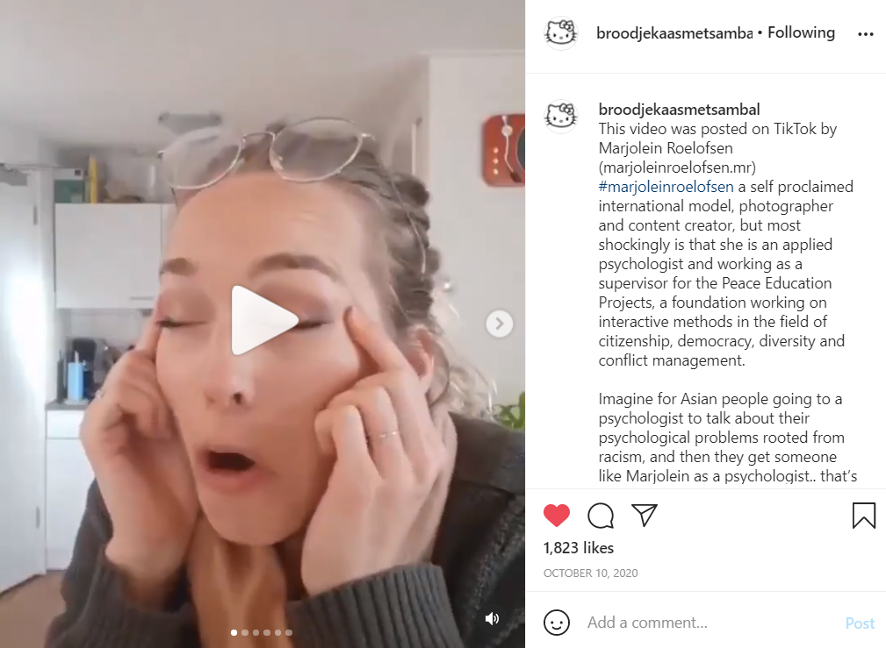

In this context, it seems that the Asian community has remained out of both the political debate and the simplifications by a large part of the Dutch ‘mainstream’ society.
But in reality, this is not the case: Dutch people of Indonesian, Chinese or Asian descent are more often victims of racism than is believed.
Some of the stereotypes towards Asians have distant origins, many date back to the war period in Vietnam while the local ones mainly address the Indonesian community the largest Dutch minority, coming from the former colony dominated for 500 years.
They were not spared either and the terms “pindaas” (peanut) or “sambal”, a spicy sauce very common in Chinese restaurants, frequently refer to Indonesians in slang.
Micro-aggressions perpetrated and handed down in mainstream popular culture that for a long time seemed only innocent games without any discriminatory purpose.

An example known to all is the ‘Hanky Panky Shanghai’ chant used in primary schools in the Netherlands: this nursery rhyme is sung to all Asian pupils on their birthday while mimicking the gesture of the almond-shaped eyes. “It’s not in Chinese, it’s just random words put together with the attempt to make fun of the language,” journalist Janet Lie, born in Amsterdam from a Chinese family in Amsterdam, told 31mag.
Although it may seem an innocent game, in reality, it is “the first moment in which stereotypes are learned” against those who are different. For Janet, her threshold one evening: it was 2013 and during an episode of the Holland’s Got Talent – a show not new to instances of racism – Judge Gordon made a joke at the expense of a competitor of Chinese origin, Xiao Wang. “What are you gonna sing tonight, Number 39 with rice? (39 met rijst)?”
The name refers to dishes on the menus in Asian restaurants which tend to unpronounceable for a European who does not know the language, so they are always accompanied by a number. And the ritual question is “with noodles or rice?” Here, Holland’s Got Talent has brought the mockery against people of Asian origin live nationally.
Janet tells 31Mag, she was shocked by Gordon’s words and the public’s reaction: there was no indignation but general hilarity. Three days later, Lie founded a Facebook group of the same name to collect public episodes of racism against Chinese, Korean, Indonesian, and other Asians. “The things that Gordon said are things we hear every day: I wanted to start a dialogue about why all this became normal,” she says.
How it affects the asian community
The Dutch health minister has admitted he is “shocked” at the level of anti-Asian racism being shown in response to the coronavirus – and says there are no plans to shut Amsterdam landmarks popular with Chinese tourists, as suggested by Geert Wilders’s far-right Freedom Party.
In an unusually forthright statement, which came as an online petition against racism and discrimination gathered more than 50,000 signatures in 48 hours, Bruno Bruins told MPs: “This is unacceptable. We must make absolutely certain it does not gather a head of steam.”
There has been a growing number of reports of racist behaviour aimed at “people of Asian appearance” – both Dutch citizens and tourists of different nationalities – since the virus, which originated in China, grabbed international media attention.
Chinese students in Wageningen, home to a world-renowned university of life sciences that attracts pupils from 150 countries, were targeted at the weekend when lifts in a residential block were daubed with excrement and the words “Chinese corona” and “Die Chinese”.
GreenLeft politician Corinne Ellemeet said she had heard of “numerous incidents”, including one where a number of passengers on a bus pulled their clothes up in front of their mouths when an unaccompanied young Chinese girl got on board.
A study published in Ethnic and Racial Studies found that Asian Americans who encountered COVID-19-related discrimination experienced higher levels of anxiety and depression. And another review of 121 studies found that youths who experienced discrimination were more likely to develop chronic mental health problems.
"We know that when an individual experiences racial trauma, it can lead to a host of mental health issues -- increased anxiety, depression, trouble eating and sleeping," Joo Han, deputy director of the Asian American Federation, told ABC News.
Russell Jeung, co-founder of Stop AAPI Hate, said that many victims "are now displaying signs of racial trauma, where they have long-term effects of depression, anxiety and somatic symptoms."
Asian Americans were considered a high-risk group even before the pandemic, according to mental health experts. A study by the Asian American Federation found that Asian Americans had some of the highest rates of depression and suicide, and were less likely to seek help compared with other racial groups.
"The mental health toll that Asian Americans have always had to live with has been one of invisibility," said Sherry Wang, an associate professor in the Counseling Psychology Department at Santa Clara University. "Like colorblindness -- not really seeing Asian Americans as people of color who struggle with issues of racism, poverty and health inequities."